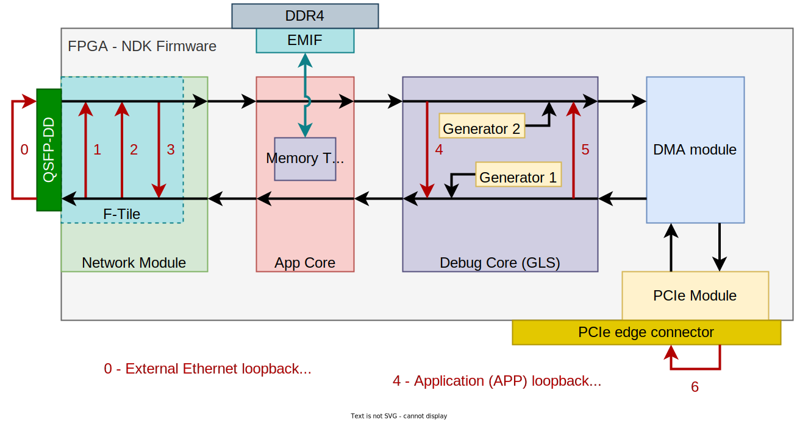

ReflexCES XpressSX AGI-FH400G
- Card information:
Vendor: ReflexCES in cooperation with CESNET
Name: XpressSX AGI-FH400G
Ethernet ports: 1x QSFP-DD
PCIe conectors: Edge connector + optional HSI connectors
- FPGA specification:
FPGA part number:
AGIB027R29A1E2VR0orAGIB027R29A1E2VR3Ethernet Hard IP: F-Tile (up to 400G Ethernet)
PCIe Hard IP: R-Tile (up to PCIe Gen5 x16)
NDK firmware support
- Ethernet cores that are supported in the NDK firmware:
- PCIe cores that are supported in the NDK firmware:
See the
<NDK-APP_root_directory>/ndk/card/agi-fh400g/config/card_conf.tclfile for supported PCIe configurations.
- Makefile targets for building the NDK firmware (valid for NDK-APP-Minimal, may vary for other apps):
Use
make 400g1command for firmware with 1x400GbE (default).Use
make 200g2command for firmware with 2x200GbE.Use
make 100g4command for firmware with 4x100GbE.Use
make 50g8command for firmware with 8x50GbE.Use
make 40g2command for firmware with 2x40GbE.Use
make 25g8command for firmware with 8x25GbE.Use
make 10g8command for firmware with 8x10GbE.
- Support for booting the NDK firmware using the nfb-boot tool:
YES, starting with the nfb-framework version 6.16.3.
Note
To build the NDK firmware for this card, you must have the Intel Quartus Prime Pro installed, including a valid license.
Board Revision
This card exists in multiple revisions. The default revision for the firmware build is BOARD_REV=0. The correct revision for the firmware build can be selected using the Makefile parameter BOARD_REV, for example as follows:
$ cd <NDK-APP_root_directory>/build/agi-fh400g
$ make BOARD_REV=1
Allowed values of BOARD_REV parameter
BOARD_REV=0- The first prototypes use FPGA part numberAGIB027R29A1E2VR0.BOARD_REV=1- The second board revision uses FPGA part numberAGIB027R29A1E2VR3.
Board Test Scripts
The NDK firmware enables easy testing of the FPGA card. The firmware includes several generators and switchable loopback paths (usually part of the the Gen Loop Switch (GLS) module). A simplified diagram showing the testing capabilities can be found below.
{kind=link}
Prerequisites
The card must be connected to a Linux server.
The nfb-framework package must be installed on this server.
The NDK driver must be in debug mode (mi_debug - see the warning at the bottom of this readme).
The NDK firmware must be loaded in the FPGA card.
You must have Python 3 including the pytest framework installed:
pip3 install --user pytest pytest-depends pytest-html.
The test scripts themselves are written in Python 3 and use the Pytest framework. This makes it possible to run the test with a single command, see example:
$ pytest --html=test_pcie.html --self-contained-html ndk/cards/agi-fh400g/bts/test_pcie.py
The whole test takes approximately 14 minutes. The test script displays test results and generates an HTML file containing a detailed description of the test results.
Warning
The test script requires an NDK driver in debug mode! To enable the debug mode, you must first remove the driver with the command “sudo modprobe -r nfb” and then add it with the correct flag: “sudo modprobe nfb mi_debug=1”.